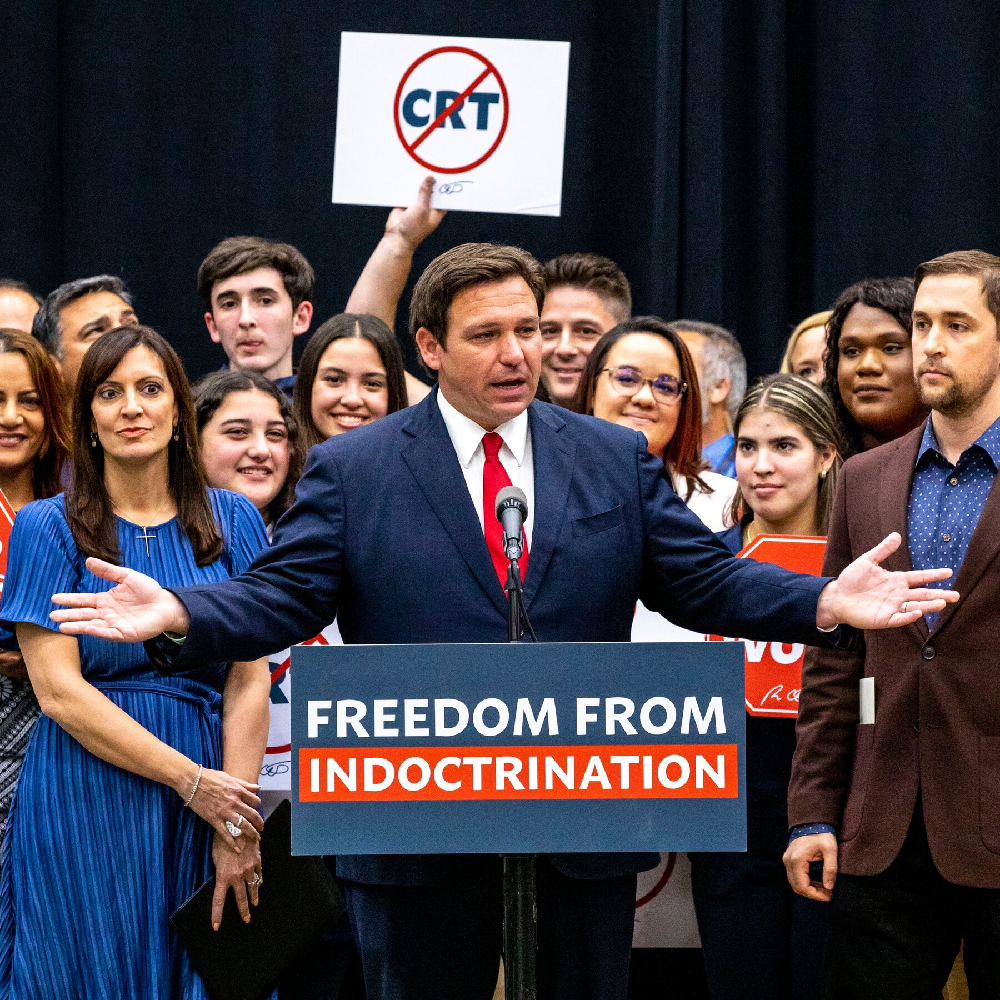

In January, the Florida Department of Education rejected the AP African American History course and provided a list of concerns about certain topics, including Movement for Black Lives, Black feminism, and reparations. The department also questioned the inclusion of certain authors and historians because the content of their writings revolved around “Critical Race Theory” and black communism. Apparently, the course violates Florida’s “Stop WOKE” Act, which regulates the content taught in schools in Florida. The Act regulates how race is taught in the classroom and lets parents sue teachers and districts that violate it. The department will reconsider the course if it is revised.
